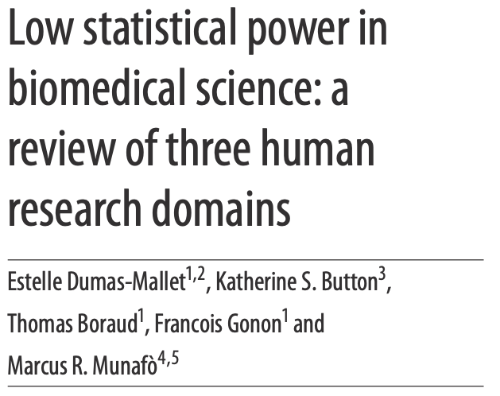
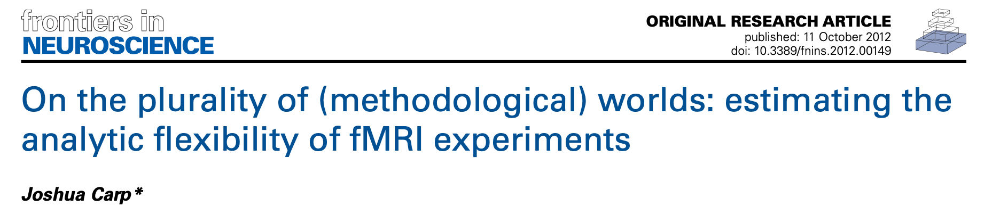

The future of (open) human neuroscience
2008: Voodoo correlations and circularity


2013: Power failure

 
Low power -> unreliable science
Positive Predictive Value (PPV): The probability that a positive result is true
Winner’s Curse: overestimation of effect sizes for significant results

Button et al, 2013
Small samples = high instability of statistical estimates

Schonbrodt & Perugini, 2013

Marek et al., 2022
2012: Effects of analytic variability
 
What is the effect of analytic variability in the wild?

- 70 teams tested 9 hypotheses using the same dataset
- No 2 team used the same workflow
- Across teams there were 33 different patterns of outcomes
- For any hypothesis, there are at least 4 workflows that can give a positive result
Botvinik-Nezer et al., 2020, Nature
A false start for fMRI data sharing

This letter comes from a group of scientists who are publishing papers using fMRI to understand the links between brain and behavior. We are writing in reaction the recent announcement of the creation of the National fMRI Data Center (www.fmridc.org). In the letter announcing the creation of the center, it was also implied that leading journals in our field may require authors of all fMRI related papers accepted for publication to submit all experimental data pertaining to their paper to the Data Center. … We are particularly concerned with any journal’s decision to require all authors of all fMRI related papers accepted for publication to submit all experimental data pertaining to their paper to the Data Center.
2010: The year data sharing broke in neuroimaging

- “Comprehensive mapping of the functional connectome, and its subsequent exploitation to discern geneticinfluences and brain–behavior relationships, will require multicenter collaborative datasets. Here we initiate this endeavor by gathering R-fMRI data from 1,414 volunteers collected independently at 35 international centers. We demonstrate a universal architecture of positive and negative functional connections, as well as consistent loci of inter-individual variability. …”
Example of Neurosynth usage

- Identified gradients of functional organization across the cortex
- Used Neurosynth to identify the most common terms associated with each gradient
Neurovault: Sharing neuroimaging results
- The results of most neuroimaging studies are images with statistical estimates at each voxel
- Neurovault.org is an open archive for these results
- Each image receives a persistent identifier for sharing

Gorgolewski et al., 2015, Frontiers in Neuroinformatics
Example of Neurovault usage

An open-source Pythonic software ecosystem

MRIQC: MRI quality control for BIDS data
mriqc.org; Esteban et al, 2017